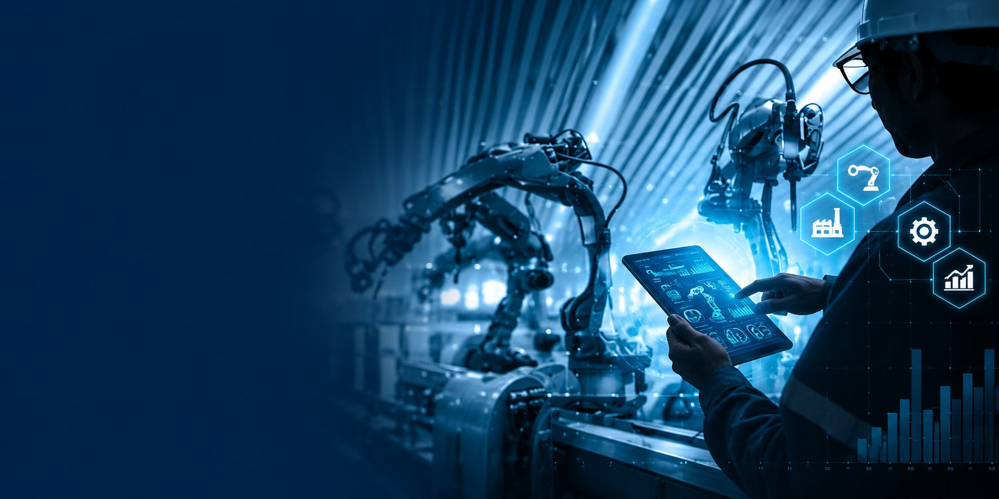
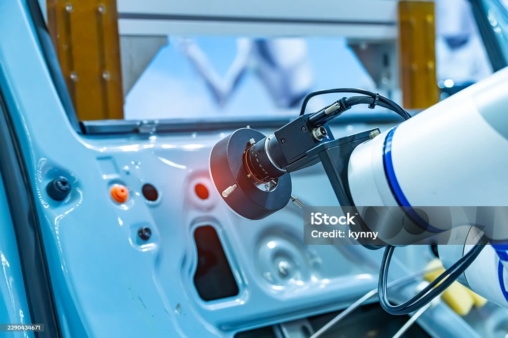

Consistent quality
The same objective standard on every weld, every shift.

MKS Vision combines welding and mechanical engineering know-how with AI agents that detect, assess and report weld defects as parts are produced in the fabrication shop.
Manual visual inspection is slow, subjective and dependent on skilled inspectors. Defects detected after fabrication and assembly turn into costly rework, which increases the cost of poor quality (%COQ).
MKS Vision builds AI-based weld inspection agents integrated into a computer vision system. The agents are placed in the fabrication shop to check weld quality. They work on an Object Detection Transformer machine learning model, which captures an image of the weld along with its 3D image, so the extent of a defect can be dimensioned and measured precisely using depth data.
The model is pretrained on large welding data sets to detect the different types of defect seen in processes like SMAW, TIG and MIG welding, and can be customised for the customer’s part and application.

Five agents hand work to each other from image to decision, and every confirmed result makes the models more accurate.
Every confirmed result retrains the models
Models are trained on your own parts and processes, with labels checked by experienced welding engineers.
An AI model is only as good as the engineering around it. Our mechanical and welding engineers deliver the complete system.
The same objective standard on every weld, every shift.
Defects caught at the station, before coating, assembly or shipment.
Images, decisions and reports stored for every weld and part.
Defect trends linked to parameters drive lasting process fixes.
Tell our engineers about your parts and welding processes and we will outline how the agents would fit your shop.